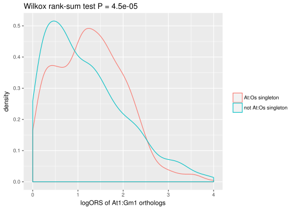
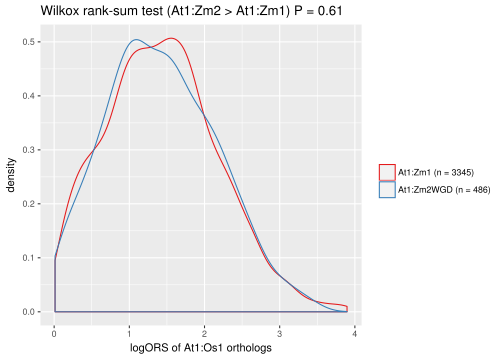

Comparison of duplicated genes
Aim of this analysis
investigate the expression similarity of duplicated genes
Rank distribution and ortholog duplication level
The following plots show the distribution of ranks (i.e. -log10( Pval ) ) for each pair of species and for ortholog duplication level. “N1” refers to the number of ortholog copies in the first species and N2 in the second. (e.g. a 1:2 ortholog in At:Os would be AtOs N1=1 N2=2)
 The following heatmap of median ranks which may give a better overview:
The following heatmap of median ranks which may give a better overview:

The main observation is that 1:1 orthologs clearly tend to have higher ranks than orthologs with any number of duplicates and that the ranks get lower when the number of orthologs increases. (Note that there is increased uncertainty in the median of the larger groups as they are more rare). An interresting pattern is that orthologs with either one or two copies in Gm seem to have the approximately same ORS. A possible explanation could be the recent duplication in Gm and that a high portion of the genes that would normally occurr in single copies haven’t had time to lose its copy. The plot below shows the the median logORS for 1:1-4 orthologs for all possible species combinations where the colored lines highlight those with duplications in Gm or Zm, both of which have a experinced a recent WGD. From this plot it is clear that duplicates in Gm tend to have about the same or even higher ORS than 1:1 orthologs. Duplicates in Zm have lower ORS than 1:1 orthologs but the difference seem to not be as large as for the other species pairs.

1:2 orthologs
If we look at 1:2 orthologs we can plot the score between the single ortholog and the two duplicate orthologs. The following plots show the logORS for each of the two alternative orthologs plotted against each other. If both of the duplicate genes have retained the same function we expect them to be similar, while if one of the duplicates have taken a different function (i.e. neo- or sub-functionalized) they may have diverged expressed patterns. Since the score for each of the duplicates also depends on whether the single ortholog has diverged it is however expected the scores correlated to a certain degree. The duplicates in Gm and Zm tend to correlate more than the others, which is expected as they have had less time to diverge.


At1:Gm2
The set of genes that have a 1:1 ortholog relationship between At and Os are more likely to be essential and therefore have a conserved expression pattern. Given the recent WGD in Gm there are many of these genes that have duplicate orthologs in Gm (i.e. At1:Gm2). The plots below compare the ORS distribution of two groups of At1:Gm2 orthologs, those where the At gene has 1:1 ortholog with Os (i.e. At1:Os1 or singleton) and those that do not.
If we look at the correlation between the ORS of the duplicates there is little difference between the two groups. In fact there is a slightly lower correlation in the singleton group (note: doing the same with Zm results in higher correlation for the singleton group).
However, the singleton group has a significantly higher ORS in general (see wilcoxon rank-sum test below). (The higher variance/lower correlation between the duplicates might just be an artifact caused by greater uncertainty in higher ORS values). This supports the hypothesis that gene-families with 1:1 orthologs tend have more conserved expression and shows that the method has the power to detect such differences when comparing sets of genes. These tests doesn’t say much about the Gm duplicates as most of the expression divergence likely occured in the At lineage or before the Gm duplication.
The same test can be done on the single copy Gm genes (At1:Gm1) where we see a similar pattern but not as strong, i.e. gene families with 1:1 orthology with Os tend to have more conserved expression pattern.

We have shown the retained duplicates in Gm have more conserved expression than what is expected of duplicated genes and that many of them belong to gene families that tend to have single copies in other species (e.g. At1:Os1), however, is this because the duplicates haven’t had enough time to be lost or is there a selection pressure to retain the duplicates? One way to test this is to look at the Gm duplicates and see if these are more likely to be orthologous to At1:Os1 genes than the single copy Gm genes (fisher’s exact test is marginally significant at P<0.05). Note that this might not be the best test as the At1:Gm2 genes does not represent all the Gm genes with retained duplicates since the latest WGD as it is limited to those that are single copy in At and was most likely single copy prior to the latest Gm WGD.
| At:Os singleton | not At:Os singleton | |
|---|---|---|
| At1:Gm1 | 842 | 614 |
| At1:Gm2 | 2987 | 1968 |
Ok, so there is indication that the duplicates in Gm are under selection pressure to be retained even though the same gene-families have a tendency to only retain single copies in other species. This fits the hypothesis that after a WGD event the duplicated state is the normal and a loss of duplicate, even though they are redundant, would lead to a reduction in the gene’s expression which might have an effect on fitness. Following this logic I hypothesize that genes that are sensitive to changes in gene regulation are more likely to retain their copy in Gm. To test this I use the ORS (gene expression conservation) of 1:1 orthologs between two different (i.e. not Gm) species and separate the ORS values into two distributions corresponding to whether the Gm ortholog is duplicate or single copy. The hypothesis is then that the ORS is higher when the Gm ortholog is duplicated. The figure below shows that The ORS between At1:Os1 tend to be higher when the Gm ortholog is duplicated (At1:Gm2) than when it is single copy (At1:Gm1).
The same kind of test was done for all combinations of three species (see below). ORS is calculated betwen spcX and spcY and tested for whther the ORS is higher (red) or lower (blue) when the ortholog in spcZ (plot caption) is duplicate (1:2 orthology in spcX:spcZ) or single copy. What we see is that for duplicates in Gm the corresponding genes tend to have high ORS for 1:1 pairs between any pair of species, although it is less significant when Zm is one of those species. Genes that are duplicates in At, Sl or Os show the opposite trend, namely that they tend to have lower ORS among 1:1 orthologs in other species. Duplicates in Zm is somewhere in between, not significantly high ORS in At, Sl or Sl 1:1 orthologs, but not lower except for 1:1 in Gm.
Zm duplicates with anchorpoints from most recent duplications
Since Zm experienced a WGD about the same time as Gm we sould expect a similar trend (duplicates associated with high ORS). One reason for why this is not so could be that duplicates are not necessarily from the most recent WGD but could be independent smaller duplication events. Here we use colinearity of duplicate regions to classify duplicates of being from the Zm WGD event or not. What we see is that for Os1:Zm2 duplicates, the putative WGD duplicates (about half of the duplicate pairs) tend to have a higher ORS.
## Parsed with column specification:
## cols(
## multiplicon_id = col_integer(),
## species_x = col_character(),
## gene_x = col_character(),
## species_y = col_character(),
## gene_y = col_character(),
## Ks = col_double(),
## level = col_integer()
## )## Parsed with column specification:
## cols(
## gene_id = col_character(),
## id_type = col_character(),
## id = col_character()
## )
Now let’s test tha At1:Os1 orthologs to see if the duplicates in Zm are associated with higher ORS than singletons if we restrict the duplicates to putative WGD duplicates (see below). No association.
